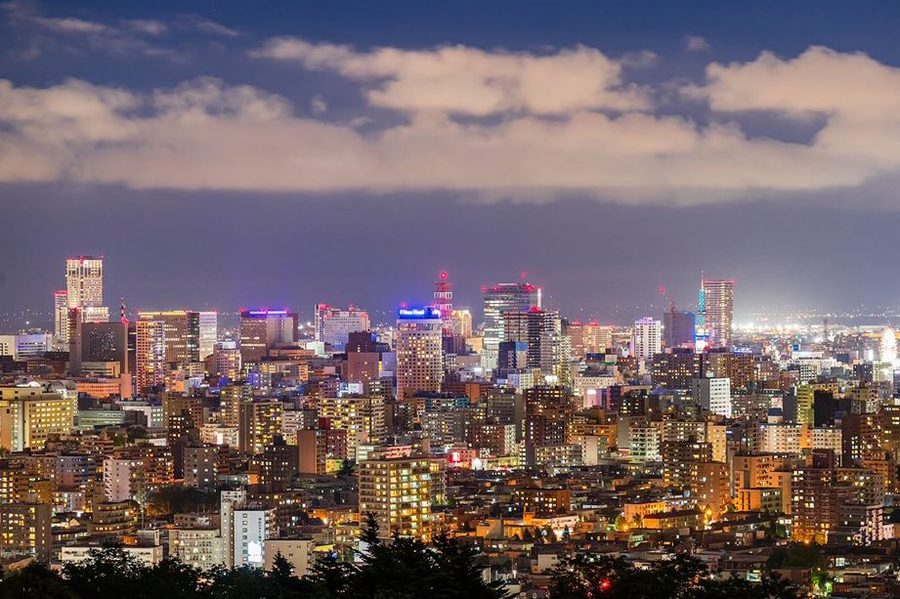
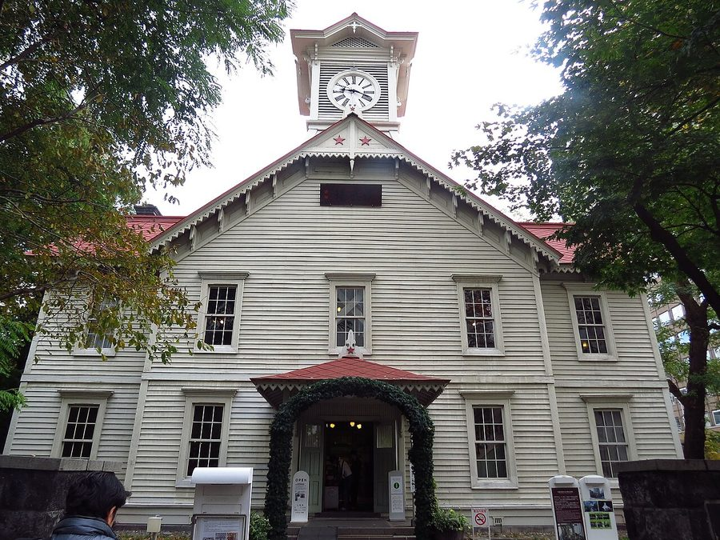
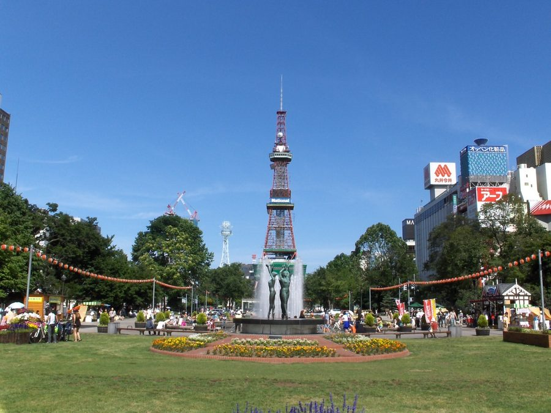
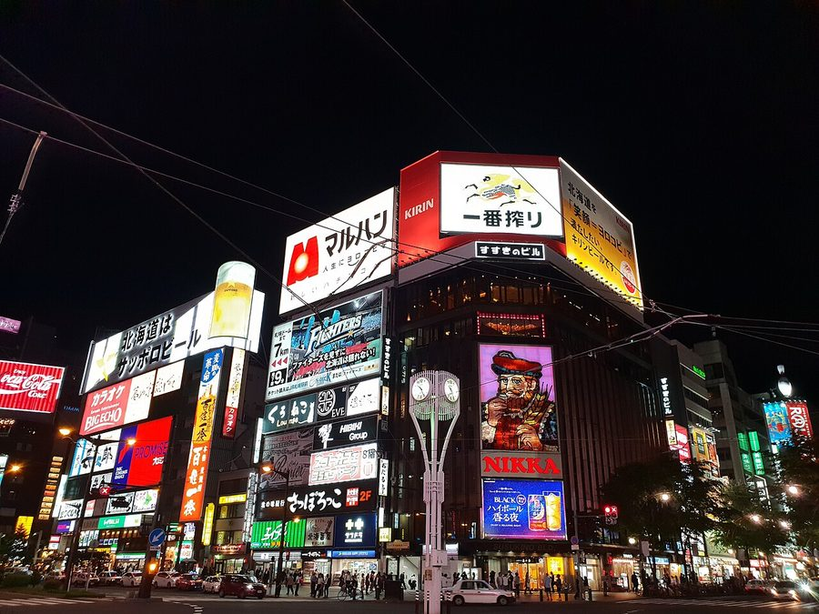

北海道札幌市の日帰り温泉・銭湯・サウナ（96件）
寄り道スポット検索アプリ「ヨッテコ」の収録データから、北海道札幌市の日帰り温泉・銭湯・サウナを営業時間・料金つきで一覧にしました（2026年8月時点）。
最も安いのは札幌市保養センター駒岡（490円）。最も遅くまで入れるのはgoodsauna＆spa SAPPORO（翌10:00まで）。朝風呂ならホテル鹿の湯本館（6:00開店）。
北海道札幌市はどんなまち？
数字で見る🔍北海道札幌市
まちの横顔




- 都市の規模: 北海道の石狩振興局に属し、道庁所在地でもある政令指定都市で、10の行政区が置かれています。人口は1,967,361人（2025年9月1日現在）で道内最多、三大都市圏以外の日本の市としても最多の人口です。人口密度1,000人/k㎡と面積1,000k㎡をともに超える、全国で唯一の市町村でもあります。
- 歴史と街づくり: アイヌの人々や和人が暮らした蝦夷地は1869年に北海道と改称され、開拓使が置かれて札幌本府の建設が始まりました。1875年には最初の屯田兵が入植しています。街づくりは開拓判官・島義勇が京都を参考に構想したもので、創成橋のたもとを基点に東西を創成川、南北を渡島通（現在の南1条通）として区画割が進められ、中心部は碁盤の目状の街並みになっています。
- 気候と観光: ケッペンの気候区分では湿潤大陸性気候・亜寒帯湿潤気候（Dfa）に属し、降雪量が多く豪雪地帯に指定されています。2023年度には年1,400万人を超える観光客が訪れる観光都市で、冬季にはさっぽろ雪まつりが開催されるほか、政府から国際会議観光都市に認定されています。
寄り道充実度（全国偏差値）
偏差値・順位は、ヨッテコ収録データ（2026年8月時点・26,033件）を市区町村別に集計した施設数の全国分布（1,728市区町村）から毎回算出しています。カードを押すとカテゴリ別の分析に切り替わります。
日帰り温泉から見た北海道札幌市
市内に日帰り温泉96件、全国7位でトップ10入り。——全国屈指の湯どころであることが、件数にも出ている。
- 天然温泉を使う店は38%で、全国水準（67%）を下回ります。温泉地というより、暮らしの延長にある入浴施設が数を支えています。
- 86%の店にサウナがあります。全国水準は52%です。亜寒帯湿潤気候に属し、豪雪地帯に指定される北海道最大の都市。整えて帰るという寄り道の仕方が、86%という数字に出ています。
- 60%の店が21時を過ぎても開いています。全国水準は40%です。年間1,400万人を超える観光客が訪れ、さっぽろ雪まつりで知られる、国際会議観光都市に認定された市。移動が遅くなった日でも、間に合う湯が見つかりそうです。
- 入浴料（判明81件）の中央値は800円。全国（650円）より23%高めです。旅先で入る湯としての価格帯です。
出典: 施設データ=ヨッテコ収録データ（26,033件・2026年8月時点）。偏差値・全国順位・全国水準は全1,728市区町村の分布から毎回算出。 / 人口=総務省「住民基本台帳に基づく人口、人口動態及び世帯数」（2026年1月1日現在） / 面積=国土地理院「全国都道府県市区町村別面積調」（2026年4月1日時点） / 森林率=農林水産省「2025年農林業センサス（農山村地域調査）」市区町村別林野率（2025年、林野率（林野面積÷総土地面積）） / 年平均気温=気象庁「平年値（1991-2020年）」。市区町村の代表点（国土交通省「大字・町丁目レベル位置参照情報」）から最も近い観測点の値 / まちの解説=日本語版Wikipedia「札幌市」（https://ja.wikipedia.org/wiki/札幌市、2026年8月21日取得）より作成（CC BY-SA 4.0） / 写真=Wikimedia Commons（各キャプションに作者・ライセンスを記載）
曜日別の営業施設数
| 月 | 火 | 水 | 木 | 金 | 土 | 日 |
|---|---|---|---|---|---|---|
| 84 | 89 | 92 | 94 | 87 | 93 | 95 |
月曜日が最も休みが多く（各12件が定休）、年中無休は71件です。※営業時間データのある96件で集計
入浴料金の分布（大人）
| 500円以下 | 40件 | |
| 501〜800円 | 2件 | |
| 801〜1,200円 | 6件 | |
| 1,201円以上 | 33件 |
料金が確認できた81件で集計。
施設一覧
| 施設 | 営業時間 | 料金（大人） |
|---|---|---|
| &...中ノ沢BASE ナカノサワベース サウナ | 10:00〜17:00 | 2,000円 |
| BORO SAPPORO サウナ Private sauna hideaway featuring Finnish sauna stove with wa… | 14:00〜17:00 | — |
| FUMINO SAUNA フミノサウナ サウナ 廃業した札幌菊水銭湯を貸切サウナに転生。全6室個室、セルフロウリュ対応。水風呂完備、大型水風呂あり（1-7名利用時）。 | 10:00〜24:30 | — |
| GARDENS CABIN ガーデンズキャビン サウナ | 14:00〜22:00 | — |
| HOTEL POTMUM POT SAUNA サウナ | 00:00〜24:00 | 3,000円 |
| PRIVATE SAUNA S-LIFE サウナ 札幌中央区のプライベートサウナ。完全個室で24時間営業の高級サウナ施設。 | 00:00〜24:00 | 5,000円 |
| SAUNA OOO SAPPORO サウナ 札幌中央区の高層ビル内にある完全予約制の大人向けコミュニケーションサウナ。3種類の異なるサウナ室を用意し、プライベートな… | 09:00〜18:00 | 4,500円 |
| goodsauna＆spa SAPPORO サウナ | 11:00〜34:00 | 1,780円 |
| mountainman サウナ 山小屋敷地内の農場レストランに併設。HUUM製エストニアサウナ「SAU-RAILER」トレーラーと、テントサウナの2タイ… | 10:00〜17:00 | 5,000円 |
| sauna cotan sapporo サウナコタンサッポロ 露天風呂サウナ Urban sauna complex in central Sapporo with comprehensive am… | 11:00〜23:00 ※曜日により異なる | 1,300円 |
| solos(ソロス) サウナ Private sauna facility with gender-separated floors and indi… | 09:00〜23:00 | — |
| あけぼの湯 | 14:30〜21:00（月休） | 500円 |
| こうしんの湯 露天風呂サウナ | 10:00〜23:00 | 500円 |
| こみちの湯 ほのか サウナ | 00:00〜24:00 | 1,800円 |
| さつき湯 サウナ 昭和31年創業のランステ登録店。 | 15:00〜22:00（火・金休） | 500円 |
| しぐれ温泉クラブ 天然温泉サウナ | 11:00〜18:00 | — |
| すすきのグランベルホテル 露天風呂 | 09:00〜18:00 | — |
| すすきの天然温泉 湯香郷 天然温泉露天風呂サウナ | 10:00〜24:00 | 2,750円 |
| ていね温泉 ほのか 天然温泉露天風呂サウナ | 00:00〜24:00 | 1,400円 |
| ぬくもりの宿 ふる川 天然温泉露天風呂サウナ | 12:00〜15:00 | 1,500円 |
| やわらぎの里 豊平峡温泉 天然温泉露天風呂 札幌近郊の豊平峡温泉。100%源泉掛け流しの日帰り温泉で、日本最大級の露天風呂が特徴。名物インドカレーも有名。 | 10:00〜22:30 | 1,300円 |
| アパホテル 〈札幌大通駅前南〉 露天風呂 | 15:00〜22:00 | — |
| アパホテル＆リゾート札幌 天然温泉露天風呂サウナ アパホテル＆リゾート札幌の日帰りプール・入浴施設 | 13:00〜19:00 ※曜日により異なる | 4,590円 |
| クインテッサホテル札幌すすきの63 Relax&Spa サウナ ドライサウナ（男性用）とスチームサウナ（女性用）を完備。大浴場とスパ併設。上質で洗練された空間。 | 14:00〜26:00 | 2,200円 |
| グランドブリッセンホテル定山渓 天然温泉露天風呂サウナ グランドブリッセンホテル定山渓の日帰り入浴・食事プラン | 12:00〜24:00 | — |
| ザ・センチュリオンサウナ レスト＆ステイ札幌 サウナ 男性専用デザイナーズホテル内の本格サウナ。HARVIA＆メトス製ストーブ2台搭載。15℃大水風呂と10℃以下シングル水風… | 00:00〜24:00 | 1,600円 |
| シャトレーゼ ガトーキングダムサッポロ 天然温泉露天風呂サウナ | 10:00〜23:00 | 1,200円 |
| スカイリゾートスパ プラウブラン 天然温泉サウナ | 12:00〜23:00 | 3,300円 |
| ビジネスホテル ライン サウナ | 11:30〜24:00 | 2,500円 |
| ホテルエミシア札幌 スパ・アルパ サウナ 2000平方メートルの大規模なリラクゼーション施設。充実した入浴施設と広々としたラウンジ、各種リラクゼーションメニュー。 | 12:00〜24:00 | 2,600円 |
| ホテルポールスター札幌 サウナ | 13:00〜20:00 | 1,000円 |
| ホテルリブマックス 札幌中島公園GRANDE 天然温泉サウナ | 13:00〜23:00 | 2,500円 |
| ホテル鹿の湯本館 天然温泉露天風呂サウナ 定山渓の名湯「鹿の湯」で知られ、源泉直下の大浴場と露天風呂で本格サウナも併設している。 | 06:00〜09:30 | 1,000円 |
| モエレ天然温泉 たまゆらの杜 天然温泉露天風呂サウナ | 00:00〜24:00 | 1,500円 |
| 伏見温泉 サウナ | 15:00〜21:00（月・金休） | 500円 |
| 休日ビルヂング 休日湯 天然温泉露天風呂サウナ | 10:00〜33:00 | 2,850円 |
| 円山温泉 サウナ | 15:00〜20:00 | 500円 |
| 冨士乃湯 サウナ | 15:00〜21:00（月休） | 500円 |
| 北のたまゆら桑園 天然温泉露天風呂サウナ | 07:00〜25:00 | 500円 |
| 北都湯 サウナ 昭和35年創業の伝統銭湯。広い浴槽とラドン施設が特徴。札幌北部の利用者に親しまれています。 | 15:00〜21:00（金休） | 500円 |
| 千成湯 サウナ 昭和35年創業。札幌市営地下鉄4駅から徒歩約10分のアクセス。電気サウナと多彩な浴槽設備が特徴の銭湯。 | 14:30〜21:30 | 500円 |
| 喜楽湯 サウナ | 11:00〜20:00（火・金休） | 500円 |
| 大学湯 番台形式の銭湯。大学村の森公園隣接。 | 15:00〜21:00 | 500円 |
| 大照湯 サウナ | 14:00〜20:00（火休） | 500円 |
| 大豊湯 サウナ 札幌市白石区の銭湯。2階に家族風呂を完備。エレベーター設置で高齢者や介護の必要な方も利用しやすい。 | 15:00〜22:30（火休） | 500円 |
| 天然温泉 あしべ屯田 天然温泉露天風呂 | 10:00〜24:00 | 800円 |
| 天然温泉やすらぎの湯 北のたまゆら厚別 天然温泉露天風呂サウナ | 08:00〜25:00 | 500円 |
| 天然温泉やすらぎの湯 北のたまゆら東苗穂 天然温泉露天風呂サウナ | 08:00〜25:00 | 500円 |
| 天然温泉プレミアホテル -CABIN-札幌 天然温泉露天風呂サウナ すすきのの都心に湧く古代海水由来の化石海水で、含鉄・ヨウ素成分により、疲労回復と美肌効果が期待できる希少な天然温泉。 | 13:30〜23:00 | 2,500円 |
| 天然温泉ホテルリブマックス PREMIUM札幌大通公園 天然温泉サウナ ホテルリブマックスPREMIUM札幌大通公園の大浴場 | 15:00〜24:00 ※曜日により異なる | — |
| 奥の湯 サウナ 昭和40年創業の銭湯。薪で湯を沸かしているため柔らかいお湯が特徴。サウナや薬湯、超音波風呂など多様な浴施設がある。 | 14:45〜22:45 ※曜日により異なる | 500円 |
| 完全個室サウナ A-SAUNA札幌 サウナ 札幌すすきの完全個室プライベートサウナ。24時間営業。HARVIA製ストーブで100度設定。タオル・アメニティ・ミネラル… | 00:00〜24:00 | 3,600円 |
| 定山渓ビューホテル 天然温泉露天風呂サウナ 札幌・定山渓温泉の名湯を日帰りで楽しめるホテル。展望大浴場から渓谷景観を眺め、本格サウナも備わっています。 | 14:00〜21:00 ※曜日により異なる | 1,500円 |
| 定山渓万世閣 ホテルミリオーネ 天然温泉露天風呂サウナ 定山渓温泉の大型施設。約450平方メートルの大浴場「美泉」が特徴。 | 12:00〜20:00 | 1,500円 |
| 定山渓温泉 湯の花 定山渓殿 天然温泉露天風呂サウナ | 10:00〜21:00 | 1,180円 |
| 定山渓源泉公園 天然温泉 定山源泉公園の足湯 | 07:00〜21:00 | — |
| 定山渓第一寶亭留 翠山亭 天然温泉露天風呂サウナ | 12:00〜15:00 | 2,850円 |
| 小金湯温泉 湯元 小金湯 天然温泉露天風呂サウナ | 06:00〜23:00 | 1,270円 |
| 小金湯温泉 湯元 旬の御宿 まつの湯 天然温泉露天風呂 | 11:00〜21:00 | 800円 |
| 川下公園 リラックスプラザ | 09:00〜19:00（月休） | 500円 |
| 川沿湯 サウナ | 14:30〜22:00（月・木休） | 500円 |
| 扇の湯 サウナ 札幌西区琴似の銭湯。昭和30年創業。充実した設備で快適な入浴環境。 | 13:40〜22:00（月休） | 500円 |
| 文の湯 サウナ | 15:00〜22:00（月・金休） | 500円 |
| 新琴似温泉 壱乃湯 天然温泉露天風呂サウナ 札幌市北区の新琴似2条通り沿いに立地する天然温泉で、駐車場も無料で完備。 | 10:00〜24:00 | 500円 |
| 旅籠屋 定山渓商店 天然温泉露天風呂サウナ 定山渓温泉の歴史ある旅館で、大浴場と露天風呂を備える。サウナと水風呂も完備。 | 13:30〜18:00 | 1,200円 |
| 月見湯 露天風呂サウナ | 13:45〜24:00（火休） | 500円 |
| 望月湯 露天風呂サウナ 昭和38年創業の銭湯。電飾で装飾された露天風呂が週替わりで異なるお湯に変わる。浴室・サウナ・露天には癒しの音楽を流し、季… | 14:30〜22:30（火休） | 500円 |
| 末広湯 サウナ | 14:30〜21:00 | 500円 |
| 札幌あいの里温泉 なごみ 天然温泉露天風呂サウナ 源泉かけ流しの美肌の湯 | 10:00〜23:00 | 500円 |
| 札幌グランドホテル サウナラウンジ Lively Sauna サウナ | 10:30〜21:30 | 1,500円 |
| 札幌グランベルホテル 露天風呂 | 09:00〜18:00 | — |
| 札幌サウナ ニコーリフレ サウナ | 00:00〜24:00 | 4,000円 |
| 札幌ホテル by グランベル 天然温泉露天風呂サウナ 札幌市街を一望する高層ホテルの天然温泉スパ。地下1000mから湧く源泉かけ流しと本格サウナで深くととのう。 | 13:00〜23:00 | 3,300円 |
| 札幌ラジウム岩盤浴 こだわり | 09:00〜19:00 ※曜日により異なる | — |
| 札幌市保養センター駒岡 札幌市南区の自然豊かな駒岡地区に立地する保養センター。清掃工場の余熱を利用した環境配慮型浴場で、バリアフリー対応。 | 10:00〜20:00 | 490円 |
| 東豊湯 サウナ 札幌市豊平区の銭湯。地下鉄東豊線「学園前駅」徒歩5分と交通便が良く、遠赤外線サウナや薬湯など豊富な設備を完備している。 | 14:30〜22:30（水休） | 500円 |
| 松竹湯 サウナ | 14:30〜22:00（水・土休） | 500円 |
| 森林公園温泉 きよら 天然温泉露天風呂サウナ | 11:00〜24:00 | 500円 |
| 湯けむりの丘 つきさむ温泉 天然温泉露天風呂サウナ 天然化粧水と呼ばれる「美肌の湯」 | 10:00〜24:00 | 1,600円 |
| 湯の郷 絢ほのか 露天風呂サウナ 札幌清田の温浴施設。岩盤浴、ロウリュ、リラクゼーションなど多彩な設備を備えた複合施設。 | 00:00〜24:00 | 1,400円 |
| 湯めごこち 南郷の湯 露天風呂サウナ 札幌白石区の公衆浴場。日本情緒を感じさせる露天風呂が特徴で、家族連れ向けの施設。 | 14:00〜24:00 ※曜日により異なる | 500円 |
| 湯処 花ゆづき 露天風呂サウナ 札幌西区二十四軒の日帰り温浴施設。岩盤浴とロウリュを備えた現代的なスパ。 | 10:00〜24:00 | 1,000円 |
| 湯屋サーモン 露天風呂サウナ 札幌西区発寒の銭湯。高温サウナと多彩な浴槽を備えた施設。 | 12:30〜23:00 ※曜日により異なる | 500円 |
| 滝の湯 サウナ | 14:45〜21:00（月・土休） | 500円 |
| 琴似温泉 露天風呂サウナ 昭和39年創業の銭湯。 | 15:00〜21:00（月・金休） | 500円 |
| 真駒内湯 天然温泉サウナ 札幌南区真駒内の銭湯。ラジウム浴泉を主浴槽として使用。 | 14:30〜22:00（火・金休） | 500円 |
| 神宮温泉 サウナ 昭和45年創業のランステ登録店。 | 15:00〜21:00（月休） | 500円 |
| 福の湯 サウナ 昭和46年創業。木材を利用して沸かす銭湯で、柔らかいお湯が特徴。小さな家族経営の銭湯だが、心身ともに温まれる場所として、… | 14:30〜22:00（月休） | 500円 |
| 章月グランドホテル 天然温泉露天風呂サウナ 章月グランドホテルの日帰り入浴・食事プラン | 12:00〜14:30 | 5,000円 |
| 美春湯 サウナ 札幌白石区の銭湯。湯冷めしにくいと評判。 | 13:45〜21:45（水休） | 500円 |
| 芸森ワーサム サウナ グランピング施設内のプライベートサウナ。TINY HOTEL内サウナおよびコンテナ製オリジナルプライベートサウナ併設。テ… | 14:00〜18:00 | — |
| 苗穂駅前温泉 蔵ノ湯 天然温泉露天風呂サウナ | 10:00〜24:00 | 500円 |
| 藤の湯 サウナ | 14:35〜21:00（月休） | 500円 |
| 足のふれあい太郎の湯 天然温泉 足のふれあい太郎の湯 定山渓温泉内の足湯 | 07:00〜20:00 | — |
| 野あそびベース フリルフスリフ サウナ 札幌から車で約40分の定山渓温泉街で、アウトドアサウナやハンドメイドのアクティビティを提供する自然体験施設。 | 09:00〜17:00 | — |
| 鶴の湯 サウナ | 15:00〜21:30 | 500円 |